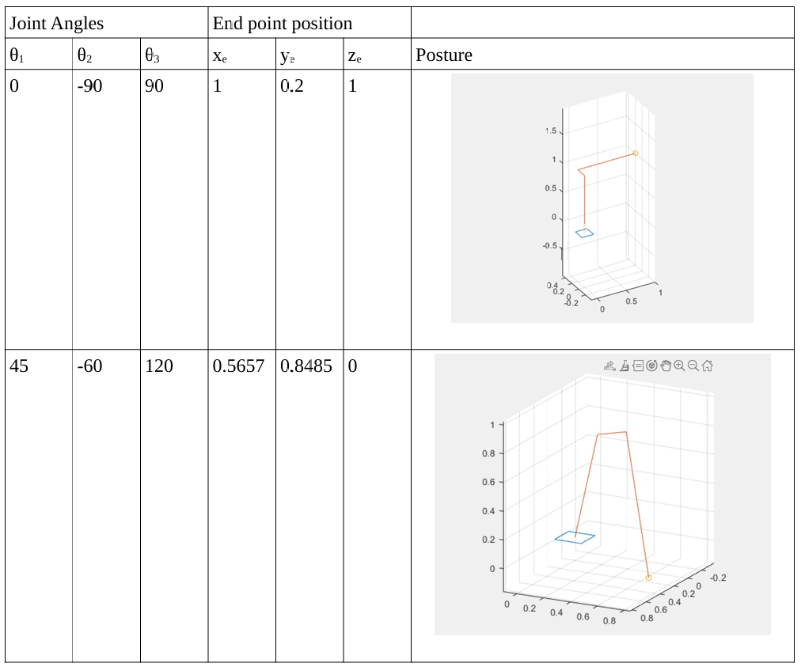
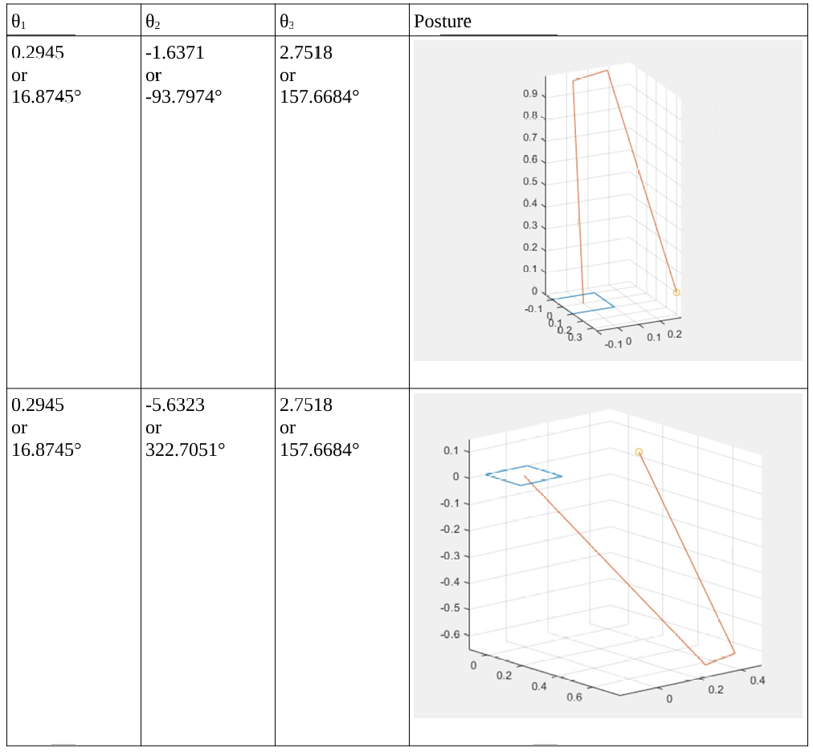
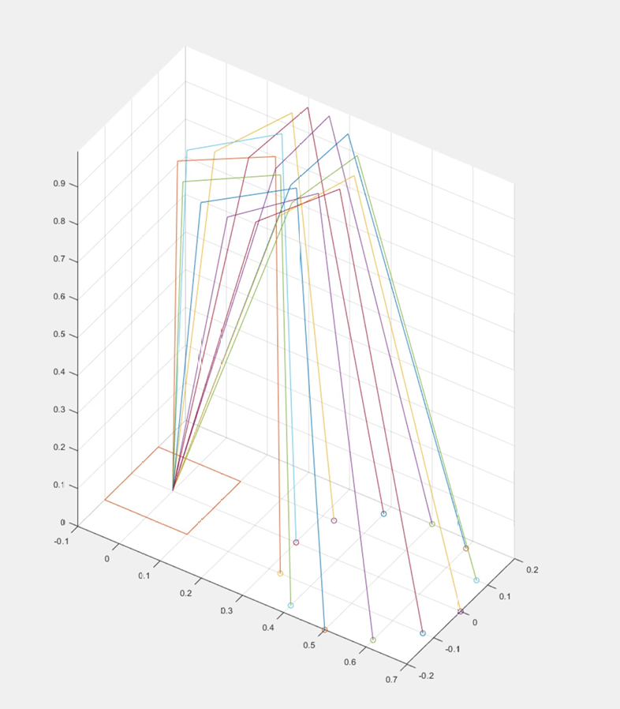

Robot Arm Forward & Inverse Kinematics
This project implements forward and inverse kinematics for a 3-revolute-joint robot manipulator in MATLAB using homogeneous transformation matrices.
The first task explores both directions of the kinematics problem. In the first part, given a set of joint angles (θ₁, θ₂, θ₃), the end-effector position is computed using forward kinematics by chaining transformation matrices T₀₁, T₁₂, and T₂₃.

Next, the process is reversed — given a target end-effector position, inverse kinematics equations are used to solve for the joint angles, yielding multiple valid posture solutions.

The second task in this project applies inverse kinematics to motion planning. The manipulator is commanded to follow a circular trajectory (radius = 0.2 m) by computing the required joint angles at 13 evenly spaced points along the path. All postures are visualized together in 3D, demonstrating how the arm configuration changes continuously as the end-effector traces the circle.

This project was coded in MATLAB and required a detailed understanding of rigid body transformations, homogeneous coordinate systems, and the geometric relationships between joint space and Cartesian space. Implementing the inverse kinematics demanded careful derivation of closed-form trigonometric solutions using atan2, handling multiple solution branches, and selecting the appropriate posture for a given configuration. The forward kinematics chain and 3D visualizations were built using matrix multiplication and MATLAB's plot3, reinforcing the connection between the mathematical model and the physical behavior of the manipulator.
- Forward & inverse kinematics
- Rigid body transformations & homogeneous coordinates
- Closed-form trigonometric solutions
- Circular trajectory planning
- 3D visualization in MATLAB
Current Location
North of Atlanta, GAUnited States of America